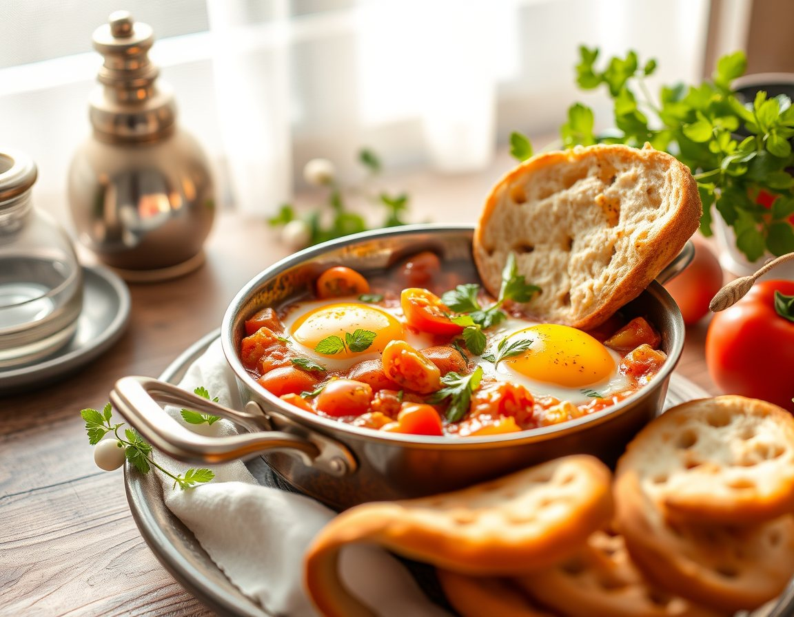
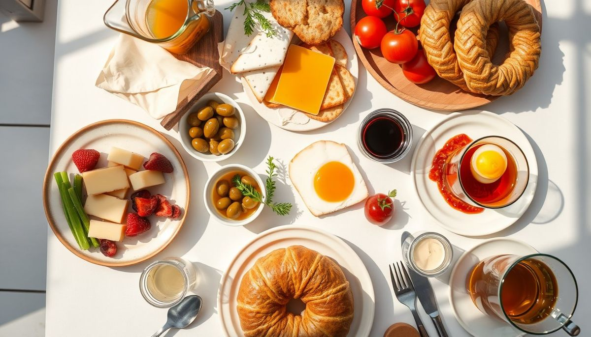
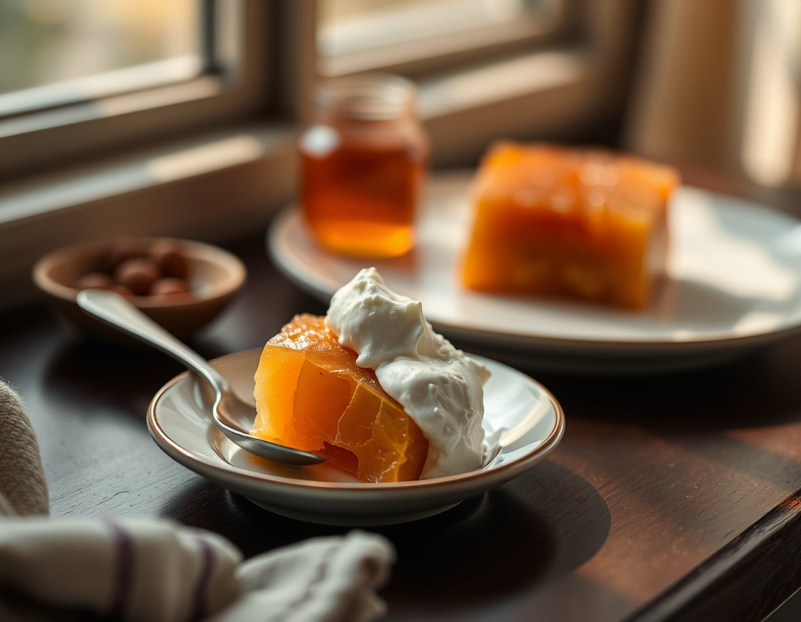
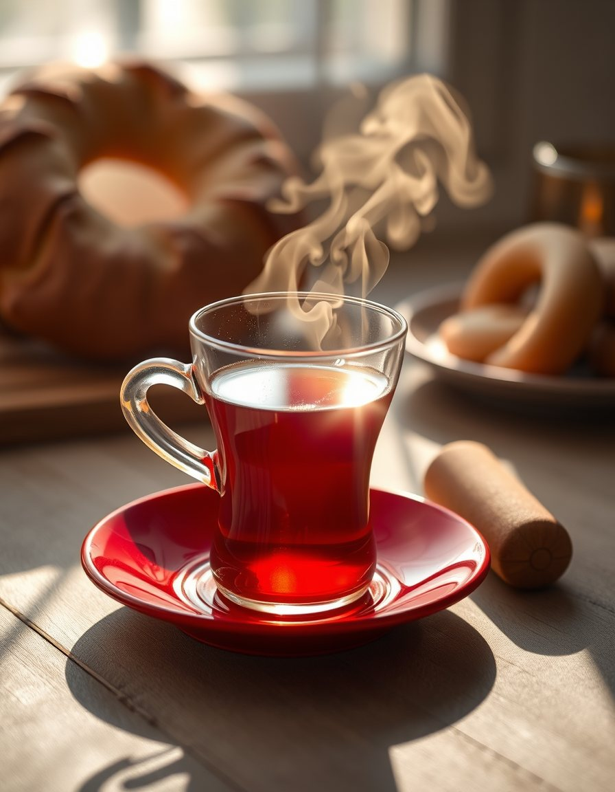
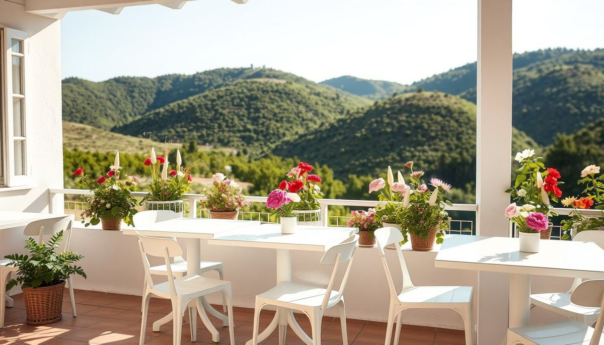

İmza lezzetler
Caracoli'ye özgü sıcaklar ve tavalar. Ürünleriniz buraya.
Caracoli'de kahvaltı sinide gelir, en az iki kişilik hazırlanır. Yalnız rezervasyonla çalışıyoruz; gelmeden önce masanızı ayırtın, sofranız hazır olsun.

Temsilî görselBaşlıklar Instagram'daki öne çıkanlarınızdan alındı. Yayında her başlığın altında kendi fotoğraflarınız ve sininin içeriği durur.

Caracoli'ye özgü sıcaklar ve tavalar. Ürünleriniz buraya.

Peynirler, zeytinler, kahvaltılıklar. Ürünleriniz buraya.

Demlik çay ve sıcaklar. Ürünleriniz buraya.
Aşağıdan seçin; mesajınız kendiliğinden hazırlanır.
Hazır mesajı Instagram'dan gönderin ya da arayıp okuyun.
Onayladığımız saatte sini masanızda olur.
Seçimlerinizi yapın, rezervasyon notu hazır olsun. Sini kahvaltı en az iki kişiliktir.
